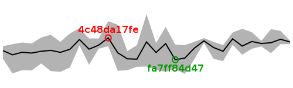

| Revision | Average | Min | Max | Size (bytes) | Benchmarked on | All times |
| bd64a1b794 | 32.31 | 32.24 | 32.34 | 93302 | Wed Aug 8 00:16:07 2012 | All times |
| f62fd06b79 | 32.39 | 32.24 | 32.64 | 93302 | Wed Aug 8 00:53:14 2012 | All times |
| 5fd2fc8e32 | 32.28 | 31.97 | 32.69 | 93342 | Tue Aug 7 23:01:17 2012 | All times |
| b6b26f5afd | 32.26 | 32.17 | 32.34 | 93342 | Tue Aug 7 23:38:50 2012 | All times |
| b52990befb | 32.32 | 32.10 | 32.60 | 93302 | Tue Aug 7 20:55:01 2012 | All times |
| 225b47efbd | 32.18 | 31.92 | 32.70 | 93302 | Tue Aug 7 21:32:19 2012 | All times |
| 3eea24e04a | 32.40 | 32.22 | 32.59 | 93302 | Tue Aug 7 22:09:38 2012 | All times |
| 876615e258 | 32.03 | 31.73 | 32.21 | 93342 | Tue Aug 7 09:54:58 2012 | All times |
| 43955e8062 | 32.14 | 31.80 | 32.31 | 93418 | Tue Aug 7 06:12:56 2012 | All times |
| d7b4d238af | 32.34 | 32.28 | 32.42 | 93378 | Tue Aug 7 03:57:27 2012 | All times |
| 71bb64df71 | 32.12 | 31.79 | 32.31 | 93378 | Tue Aug 7 04:34:55 2012 | All times |
| 9c9e2c6b1d | 31.82 | 31.35 | 32.21 | 92898 | Tue Aug 7 02:33:48 2012 | All times |
| fa7ff84d47 | 31.77 | 31.49 | 32.23 | 92612 | Tue Aug 7 00:39:23 2012 | All times |
| da9d9a6660 | 32.26 | 31.41 | 32.76 | 92612 | Mon Aug 6 18:02:09 2012 | All times |
| 050eba485a | 31.99 | 31.47 | 32.27 | 92612 | Mon Aug 6 07:19:48 2012 | All times |
| 5f8dd93b2a | 32.31 | 31.57 | 33.14 | 92553 | Mon Aug 6 07:57:57 2012 | All times |
| d77b4c9404 | 31.79 | 31.56 | 32.21 | 92513 | Mon Aug 6 02:22:33 2012 | All times |
| 67a79d5510 | 31.80 | 31.46 | 32.03 | 92553 | Mon Aug 6 02:59:04 2012 | All times |
| 6d56f4429e | 31.98 | 31.44 | 32.82 | 92513 | Mon Aug 6 18:39:01 2012 | All times |
| 4c48da17fe | 32.43 | 32.18 | 32.93 | 92513 | Mon Aug 6 01:45:10 2012 | All times |
| e3d59a330e | 32.21 | 32.10 | 32.41 | 92513 | Mon Aug 6 03:36:17 2012 | All times |
| c289daf4db | 32.09 | 31.62 | 32.41 | 92513 | Mon Aug 6 19:16:04 2012 | All times |
| a29fd0668e | 32.38 | 32.20 | 32.72 | 92513 | Mon Aug 6 04:50:35 2012 | All times |
| 07cd608e26 | 32.09 | 31.54 | 32.56 | 92513 | Mon Aug 6 04:13:07 2012 | All times |
| bfdb8242d9 | 31.99 | 31.41 | 32.31 | 92513 | Sat Aug 4 10:59:44 2012 | All times |
| 743d05c89c | 32.05 | 31.43 | 32.52 | 92513 | Sat Aug 4 09:25:59 2012 | All times |
| 7caeaa0b05 | 32.03 | 31.66 | 32.44 | 92553 | Sat Aug 4 02:06:01 2012 | All times |
| 15b9cc32d4 | 31.97 | 31.45 | 32.26 | 92513 | Sat Aug 4 10:03:16 2012 | All times |
| 7464bfd078 | 32.00 | 31.46 | 32.29 | 92553 | Fri Aug 3 01:54:35 2012 | All times |
| b38abd8131 | 31.92 | 31.36 | 32.24 | 92553 | Fri Aug 3 01:18:35 2012 | All times |
| b610464e80 | 32.05 | 31.80 | 32.18 | 92513 | Mon Aug 6 08:39:55 2012 | All times |
Written on Wed Aug 8 17:42:22 2012.